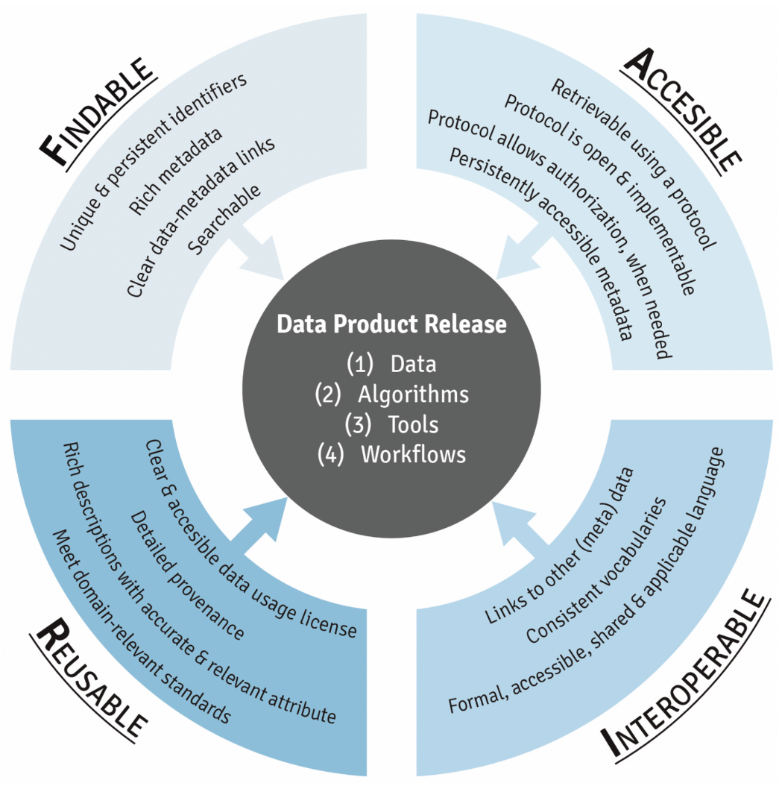

FAIR Data Management Practices
This training module was developed by Rebecca Boyles, with contributions from Julia E. Rager.
All input files (script, data, and figures) can be downloaded from the UNC-SRP TAME2 GitHub website.
Introduction to Training Module
This training module provides a description of FAIR data management practices, and points participants to important resources to help ensure generated data meet current FAIR guidelines. This training module is descriptive content-based (as opposed to coding-based), in order to present information clearly and serve as an important resource alongside the other scripted training activities.
Training Module’s Environmental Heatlh Questions
This training module was specifically developed to answer the following questions:
- What is FAIR?
- When was FAIR first developed?
- When making data ‘Findable’, who and what should be able to find your data?
- When saving/formatting your data, which of the following formats is preferred to meet FAIR principles: .pdf, .csv, or a proprietary output file from your lab instrument?
- How can I find a suitable data repository for my data?
Introduction to FAIR
Proper data management is of utmost importance while leading data analyses within the field of environmental health science. A method to ensure proper data management is the implementation of Findability, Accessibility, Interoperability, and Reusability (FAIR) practices. A landmark paper that describes FAIR practices in environmental health research is the following:
- Wilkinson MD, Dumontier M, Aalbersberg IJ, et al. The FAIR Guiding Principles for scientific data management and stewardship. Sci Data. 2016 Mar 15. PMID: 26978244.
The FAIR principles describe a framework for data management and stewardship aimed at increasing the value of data by enabling sharing and reuse. These principles were originally developed from discussions during the Jointly Designing a Data FAIRport meeting at the Lorentz Center in Leiden, The Netherlands in 2014, which brought together stakeholders to discuss the creation of an environment for virtual computational science. The resulting principles are technology agnostic, discipline independent, community driven, and internationally adopted.
Below is a schematic providing an overview of this guiding principle: 
Answer to Environmental Health Question 1 & 2
With this background, we can answer Environmental Health Question #1 and #2: What is FAIR and when was it first developed?
Answer: FAIR is guiding framework that was recently established to promote best data management practices, to ensure that data are Findable, Accessibility, Interoperable, and Reusable. It was first developed in 2014- which means that these principles are very new and continuing to evolve!
Breaking Down FAIR, Letter-by-Letter
The aspects of the FAIR principles apply to data and metadata with the aim of making the information available to people and computers as described in the seminal paper by Wilkinson et al., 2016.
F (Findable) in FAIR
The F in FAIR identifies components of the principles needed to make the meta(data) findable through the application of unique persistent identifiers, thoroughly described, reference the unique identifiers, and that the descriptive information (i.e., metadata) could be searched by both humans and computer systems.
F1. (Meta)data are assigned a globally unique and persistent identifier
- Each dataset is assigned a globally unique and persistent identifier (PID), for example a DOI. These identifiers allow to find, cite and track (meta)data.
- A DOI looks like: https://doi.org/10.1109/5.771073
- Action: Ensure that each dataset is assigned a globally unique and persistent identifier. Certain repositories automatically assign identifiers to datasets as a service. If not, obtain a PID via a PID registration service.
F2. Data are described with rich metadata
- Each dataset is thoroughly (see R1) described: these metadata document how the data was generated, under what term (license) and how it can be (re)used and provide the necessary context for proper interpretation. This information needs to be machine-readable.
- Action: Fully document each dataset in the metadata, which may include descriptive information about the context, quality and condition, or characteristics of the data. Another researcher in any field, or their computer, should be able to properly understand the nature of your dataset. Be as generous as possible with your metadata (see R1).
F3. Metadata clearly and explicitly include the identifier of the data it describes
- Explanation: The metadata and the dataset they describe are separate files. The association between a metadata file and the dataset is obvious thanks to the mention of the dataset’s PID in the metadata.
- Action: Make sure that the metadata contains the dataset’s PID.
F4. (Meta)data are registered or indexed in a searchable resource
- Explanation: Metadata are used to build easily searchable indexes of datasets. These resources will allow to search for existing datasets similarly to searching for a book in a library.
- Action: Provide detailed and complete metadata for each dataset (see F2).
Answer to Environmental Health Question 3
With this, we can answer Environmental Health Question #3: When making data ‘Findable’, who and what should be able to find your data?
Answer: Both humans and computer systems should be able to find your data.
A (Accessible) in FAIR
The A components are designed to enable meta(data) be available long-term, accessed by humans and machines using standard communication protocols with clearly described limitations on reuse.
A1. (Meta)data are retrievable by their identifier using a standardized communications protocol
- Explanation: If one knows a dataset’s identifier and the location where it is archived, one can access at least the metadata. Furthermore, the user knows how to proceed to get access to the data.
- Action: Clearly define who can access the actual data and specify how. It is possible that data will not be downloaded, but rather reused in situ. If so, the metadata must specify the conditions under which this is allowed (sometimes versus the conditions needed to fulfill for external usage/“download”).
A1.1 The protocol is open, free, and universally implementable
- Explanation: Anyone with a computer and an internet connection can access at least the metadata.
A1.2 The protocol allows for an authentication and authorization procedure, where necessary
- Explanation: It often makes sense to request users to create a user account on a repository. This allows to authenticate the owner (or contributor) of each dataset, and to potentially set user specific rights.
A2. Metadata are accessible, even when the data are no longer available
- Explanation: Maintaining all datasets in a readily usable state eternally would require an enormous amount of curation work (adapting to new standards for formats, converting to different format if specifically needed software is discontinued, etc). Keeping the metadata describing each dataset accessible, however, can be done with fewer resources. This allows to build comprehensive data indexes including all current, past, and potentially arising datasets.
- Action: Provide detailed and complete metadata for each dataset (see R1).
I (Interoperable) in FAIR
The I components of the principles address needs for data exchange and interpretation by humans and machines which includes the use of controlled vocabularies or ontologies to describe meta(data) and to describe provenance relationships through appropriate data citation.
I1. (Meta)data use a formal, accessible, shared, and broadly applicable language
- Explanation: Interoperability typically means that each computer system has at least knowledge of the other system’s formats in which data is exchanged. If (meta)data are to be searchable and if compatible data sources should be combinable in a (semi)automatic way, computer systems need to be able to decide if the content of datasets are comparable.
- Action: Provide machine readable data and metadata in an accessible language, using a well-established formalism. Data and metadata are annotated with resolvable vocabularies/ontologies/thesauri that are commonly used in the field (see I2).
I2. (Meta)data use vocabularies that follow FAIR principles
- Explanation: The controlled vocabulary (e.g., MESH) used to describe datasets needs to be documented. This documentation needs to be easily findable and accessible by anyone who uses the dataset.
- Action: The vocabularies/ontologies/thesauri are themselves findable, accessible, interoperable and thoroughly documented, hence FAIR. Lists of these standards can be found at: NCBO BioPortal, FAIRSharing, OBO Foundry.
I3. (Meta)data include qualified references to other (meta)data
- Explanation: If the dataset builds on another dataset, if additional datasets are needed to complete the data, or if complementary information is stored in a different dataset, this needs to be specified. In particular, the scientific link between the datasets needs to be described. Furthermore, all datasets need to be properly cited (i.e. including their persistent identifiers).
- Action: Properly cite relevant/associated datasets, by providing their persistent identifiers, in the metadata, and describe the scientific link/relation to your dataset.
R (Reusable) in FAIR
The R components highlight needs for the meta(data) to be reused and support integration such as sufficient description of the data and data use limitations.
R1. Meta(data) are richly described with a plurality of accurate and relevant attributes
Explanation: Description of a dataset is required at two different levels:
- Metadata describing the dataset: what does the dataset contain, how was the data generated, how has it been processed, how can it be reused.
- Metadata describing the data: any needed information to properly use the data, such as definitions of the variable names
Action: Provide complete metadata for each data file.
- Scope of your data: for what purpose was it generated/collected?
- Particularities or limitations about the data that other users should be aware of.
- Date of the dataset generation, lab conditions, who prepared the data, parameter settings, name and version of the software used.
- Variable names are explained or self-explanatory.
- Version of the archived and/or reused data is clearly specified and documented.
What Does This Mean for You?
We advise the following as ‘starting-points’ for participants to start meeting FAIR guidances:
- Learn how to create a Data Management Plan
- Keep good documentation (project & data-level) while working
- Do not use proprietary file formats (.csv is a great go-to formats for your data!)
- When able, use a domain appropriate metadata standard or ontology
- Ruthlessly document any steps in a project
- Most of FAIR can be handled by selecting a good data or software repository
- Don’t forget to include a license!
Answer to Environmental Health Question 4
With these, we can answer Environmental Health Question #4: When saving/formatting your data, which of the following formats is preferred to meet FAIR principles: .pdf, .csv, or a proprietary output file from your lab instrument?
Answer: A .csv file is preferred to enhance data sharing.
Data Repositories for Sharing of Data
When you are organizing your data to deposit online, it is important to identify an appropriate repository to publish your dataset it. A good starting place is a repository registry such as FAIRsharing.org or re3data.org. Journals can also provide helpful resources and starting repository lists, such as Nature and PLOS, which both have published a list of recommended repositories. Funding agencies, including the NIH, can also inform specific repositories.
Below are some examples of two main categories of data repositories:
1. Domain Agnostic Data Repositories Domain agnostic repositories allow the deposition of any data type. Some examples include the following:
- Data in Brief Articles (e.g., Elsevier’s Data in Brief Journal)
- Dryad
- Figshare
- The Dataverse Project
- Zenodo
2. Domain Specific Data Repositories Domain specific repositories allow the deposition of specific types of data, produced from specific types of technologies or within specific domains. Some examples include the following:
- Database of Genotypes and Phenotypes
- Gene Expression Omnibus
- The Immunology Database and Analysis Portal
- Metabolomics Workbench (National Metabolomics Data Repository)
- Microphysiology Systems Database
- Mouse Genome Informatics
- Mouse Phenome Database
- OpenNeuro
- Protein Data Bank
- ProteomeXchange
- Rat Genome Database
- The Database of Genotypes and Phenotypes
- Zebrafish Model Organism Database
- and many, many, many others…
Recent Shifts in Regulatory Policies for Data Sharing
The NIH Data Management and Sharing Policy
NIH’s data management and sharing (DMS) policy became effective January 2023. This policy specifically lists the expectations that investigators must comply with in order to promote the sharing of scientific data.
Information about this recent policy can be found through updated NIH websites.
Information about writing an official Data Management and Sharing (DMS) plan for your research can be found through NIH’s Guidance on Writing a Data Management & Sharing Plan.
The 2018 Evidence Act
The Evidence Act, or Foundations for Evidence-Based Policymaking Act of 2018, was signed into U.S. law on January 14, 2019.
The Act requires federal agencies to build the capacity to use evidence and data in their decision-making and policymaking. It also requires agencies to: Develop an evidence-building plan as part of their quadrennial strategic plan & Develop an evaluation plan concurrent with their annual performance plan.
The Evidence Act also:
- Mandates that data be “open by default”
- Specifies that a comprehensive data inventory should be created for each agency’s open data assets
How Does the NIH Data Management and Sharing Policy Intersect with the 2018 Evidence Act? Making your data FAIR, by definition, makes it more shareable and reusable. Many of the requirements in the NIH DMS and the Evidence Act policy overlap with the FAIR principles.
The CARE Principles for Indigenous Data Governance
While we are experiencing increased requirements for the open sharing of data, it is important to recognize that there are circumstances and populations that should, at the same time, be carefully protected. Examples include human clinical or epidemiological data that may become identifiable upon the sharing of sensitive data. Another example includes the consideration of Indigenous populations. A recent article by Carroll et al. 2021 describes in their abstract:
As big data, open data, and open science advance to increase access to complex and large datasets for innovation, discovery, and decision-making, Indigenous Peoples’ rights to control and access their data within these data environments remain limited. Operationalizing the FAIR Principles for scientific data with the CARE Principles for Indigenous Data Governance enhances machine actionability and brings people and purpose to the fore to resolve Indigenous Peoples’ rights to and interests in their data across the data lifecycle.
Additional Training Resources on FAIR
Many organizations, from specific programs to broad organizations, provide training and resources for scientists in FAIR principles. Some of the notable global organizations organizing and providing training that offer opportunities for community involvement are:
- Committee on Data for Science and Technology (CODATA)
- Global Alliance for Genomics & Health
- GoFAIR
- Force11
- Research Data Alliance
Example Workshops discussing FAIR:
NAS Implementing FAIR Data for People and Machines: Impacts and Implications (2019). Available at: https://www.nationalacademies.org/our-work/implementing-fair-data-for-people-and-machines-impacts-and-implications
NIH Catalyzing Knowledge-driven Discovery in Environmental Health Sciences Through a Harmonized Language, Virtual Workshop (2021). Available at: https://www.niehs.nih.gov/news/events/pastmtg/2021/ehslanguage/index.cfm
NIH Trustworthy Data Repositories Workshop (2019). Available at: https://datascience.nih.gov/data-ecosystem/trustworthy-data-repositories-workshop
NIH Virtual Workshop on Data Metrics (2020). Available at: https://datascience.nih.gov/data-ecosystem/nih-virtual-workshop-on-data-metrics
NIH Workshop on the Role of Generalist Repositories to Enhance Data Discoverability and Reuse: Workshop Summary (2020). Available at: https://datascience.nih.gov/data-ecosystem/nih-data-repository-workshop-summary
Example Government Report Documents on FAIR:
Collins S, Genova F, Harrower N, Hodson S, Jones S, Laaksonen L, Mietchen D, Petrauskaite R, Wittenburg P. Turning FAIR into reality: Final report and action plan from the European Commission expert group on FAIR data: European Union; 2018. Available at: https://www.vdu.lt/cris/handle/20.500.12259/103794.
EU. FAIR Data Advanced Use Cases: From Principles to Practice in the Netherlands. 2018. European Union. Available at: doi:10.5281/zenodo.1250535.
NIH. Final NIH Policy for Data Management and Sharing and Supplemental Information. National Institutes of Health. Federal Register, vol. 85, 2020-23674, 30 Oct. 2020, pp. 68890–900. Available at: https://www.federalregister.gov/d/2020-23674.
NIH. NIH Strategic Plan for Data Science 2018. National Institutes of Health. Available at: https://datascience.nih.gov/strategicplan.
NLM. NLM Strategic Plan 2017 to 2027. U.S. National Library of Medicine, Feb. 2018. Available at: https://www.nlm.nih.gov/about/strategic-plan.html.
Example Related Publications on FAIR:
Comess S, Akbay A, Vasiliou M, Hines RN, Joppa L, Vasiliou V, Kleinstreuer N. Bringing Big Data to Bear in Environmental Public Health: Challenges and Recommendations. Front Artif Intell. 2020 May;3:31. doi: 10.3389/frai.2020.00031. Epub 2020 May 15. PMID: 33184612; PMCID: PMC7654840.
Koers H, Bangert D, Hermans E, van Horik R, de Jong M, Mokrane M. Recommendations for Services in a FAIR Data Ecosystem. Patterns (N Y). 2020 Jul 7;1(5):100058. doi: 10.1016/j.patter.2020.100058. Erratum in: Patterns (N Y). 2020 Sep 11;1(6):100104. PMID: 33205119.
Kush RD, Warzel D, Kush MA, Sherman A, Navarro EA, Fitzmartin R, Pétavy F, Galvez J, Becnel LB, Zhou FL, Harmon N, Jauregui B, Jackson T, Hudson L. FAIR data sharing: The roles of common data elements and harmonization. J Biomed Inform. 2020 Jul;107:103421. doi: 10.1016/j.jbi.2020.103421. Epub 2020 May 12. PMID: 32407878.
Lin D, Crabtree J, Dillo I, Downs RR, Edmunds R, Giaretta D, De Giusti M, L’Hours H, Hugo W, Jenkyns R, Khodiyar V, Martone ME, Mokrane M, Navale V, Petters J, Sierman B, Sokolova DV, Stockhause M, Westbrook J. The TRUST Principles for digital repositories. Sci Data. 2020 May 14;7(1):144. PMID: 32409645.
Thessen AE, Grondin CJ, Kulkarni RD, Brander S, Truong L, Vasilevsky NA, Callahan TJ, Chan LE, Westra B, Willis M, Rothenberg SE, Jarabek AM, Burgoon L, Korrick SA, Haendel MA. Community Approaches for Integrating Environmental Exposures into Human Models of Disease. Environ Health Perspect. 2020 Dec;128(12):125002. PMID: 33369481.
Roundtable on Environmental Health Sciences, Research, and Medicine; Board on Population Health and Public Health Practice; Health and Medicine Division; National Academies of Sciences, Engineering, and Medicine. Principles and Obstacles for Sharing Data from Environmental Health Research: Workshop Summary. Washington (DC): National Academies Press (US); 2016 Apr 29. PMID: 27227195.
Let’s imagine that you’re a researcher who is planning on gathering a lot of data using the zebrafish model. In order to adequately prepare your studies and steps to ensure data are deposited into proper repositories, you have the idea to check repository information obtained in FAIRsharing.org. What are some example repositories and relevant ontology resources that you could use to organize, deposit, and share your zebrafish data (hint: use the search tool)?